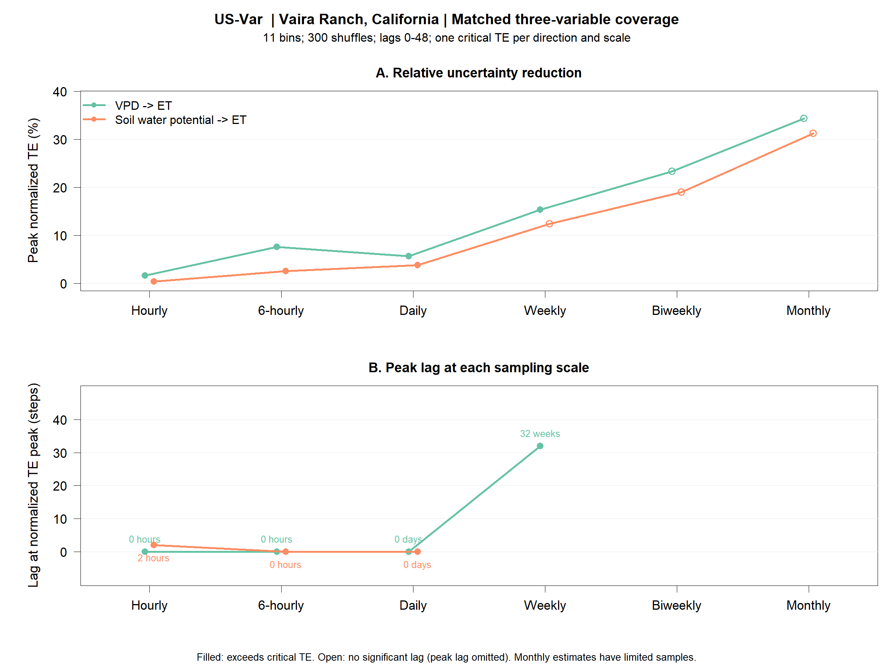
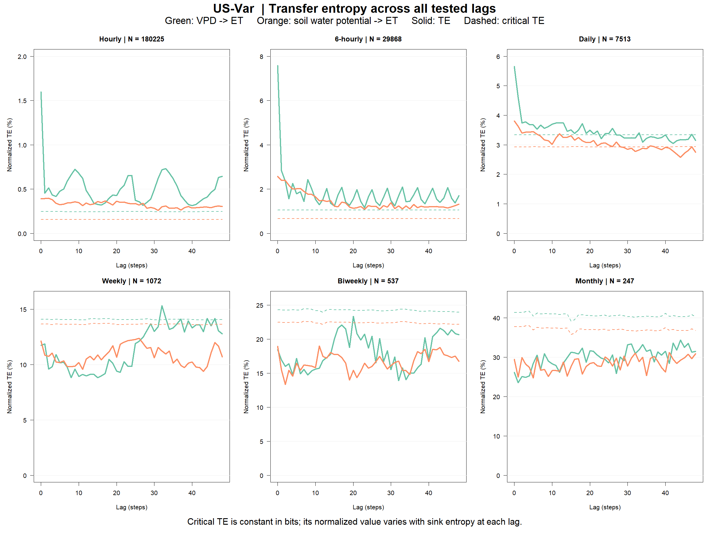

Vaira Ranch, California (38.4133 N, 120.9508 W). Selected by the largest simultaneous hourly ET/VPD/soil-potential processed sample count among available sites (180,225), not simply the longest nominal site metadata range. Pair-count upper bounds and actual checks are in Tables/site_selection_ranking.csv. The selected record spans approximately 21 years.
The unchanged TE_implementation.R was copied from the user-specified Disturbance_Synchrony/01_Functions folder. Numerical parameters follow that project's 02_Analysis/02_TE_anomaly_main.R: 11 bins, 300 shuffles, alpha=0.05, lower/upper folding quantiles=0.001/0.999, seed=111, both zero-bin flags FALSE. The requested maximum lag is 48 steps and Lag_Dependent_Crit=FALSE. Sequential execution preserves the reference randomization behavior.
TE = H(Yt,Yt-1) + H(Yt-1,Xt-lag) - H(Yt-1) - H(Yt,Yt-1,Xt-lag), in bits. Normalized TE = 100 TE/H(Yt). The original routine excludes the first source row and uses target rows lag+2 through N. It derives quantile bounds from nonzero data, folds tails into equal-width edge bins, and removes missing triplets only after lagging. No estimator corrections were substituted.
One critical TE is computed from the lag-48 matrix: each column is independently shuffled with missing positions retained, 300 times. Threshold = mean(shuffled TE) + qt(0.95, df=100) times SD(shuffled TE), exactly as in the reference. Normalized thresholds can vary with lag because H(Yt) varies. Significance is TE > TEcrit. These are pointwise tests, not a multiple-lag familywise test, and shuffling does not preserve serial correlation.
Wrapper compatibility: run_TE() in the reference rejects NA values because !is.finite(NA) is TRUE. To retain gaps, this workflow calls its unchanged Cal_TE_MI_main() core directly with the same seed and parameters, then reproduces the wrapper's normalization/significance columns. The external reference and the local snapshot are not patched.
Existing processed inputs are unchanged. ET is the nonnegative latent-heat-derived rate (LE_F times 86400/2.45e6, mm/day). Soil input is log10 positive suction magnitude, estimated from SWC and site soil hydraulic parameters, not a direct water-potential observation. Higher values indicate drier soil.
At each scale, all three analysis variables share a common finite-observation mask and time window. Leading/trailing jointly missing bins are trimmed; internal NA bins remain. Both directions therefore use identical valid triplet timestamps at every lag. Seasonal fits are those from the original full records (biweekly fits use its full record), not refitted after masking. This is a full-record lag analysis, not a rolling-window analysis.
| Site_ID | scale | start | end | n_grid | n_joint | n_missing |
|---|---|---|---|---|---|---|
| US-Var | hourly | 2000-10-29 02:00:00 | 2021-10-26 05:00:00 | 184012 | 180225 | 3787 |
| US-Var | 6_hourly | 2000-10-30 | 2021-10-26 | 30665 | 29868 | 797 |
| US-Var | daily | 2000-10-30 | 2021-10-25 | 7666 | 7513 | 153 |
| US-Var | weekly | 2000-10-30 | 2021-10-18 | 1095 | 1072 | 23 |
| US-Var | biweekly | 2000-10-30 | 2021-10-04 | 547 | 537 | 10 |
| US-Var | monthly | 2000-11-01 | 2021-10-01 | 252 | 247 | 5 |
Each direction has 49 rows (lags 0-48). Lag_time/Lag_unit give physical delay; target_start/target_end give the usable target-time span at each lag, and n_valid_triplets gives its actual sample count. Full regular aligned inputs are saved in Inputs. Monthly delays use calendar months, never an assumed fixed month length. At maximum lag: 48 hours, 288 hours, 48 days, 48 weeks, 96 weeks, and 48 months respectively.

Primary peak is the maximum significant normalized TE, matching the reference peak-selection convention. If no lag is significant, the maximum amplitude is shown open and its peak lag is NA. Raw-TE peaks and unfiltered maxima are also saved in peak_TE_by_scale.csv. Lag zero is included, as in the reference, and indicates contemporaneous association rather than delayed predictive transfer.
| scale | driver | peak_TEnorm | significant | peak_lag_steps | peak_lag_time | lag_unit | n_joint | min_triplets |
|---|---|---|---|---|---|---|---|---|
| hourly | VPD | 1.5980 | TRUE | 0 | 0 | hours | 180225 | 178601 |
| hourly | Soil | 0.3966 | TRUE | 2 | 2 | hours | 180225 | 178601 |
| 6_hourly | VPD | 7.5770 | TRUE | 0 | 0 | hours | 29868 | 29131 |
| 6_hourly | Soil | 2.5710 | TRUE | 0 | 0 | hours | 29868 | 29131 |
| daily | VPD | 5.6560 | TRUE | 0 | 0 | days | 7513 | 7289 |
| daily | Soil | 3.8080 | TRUE | 0 | 0 | days | 7513 | 7289 |
| weekly | VPD | 15.3300 | TRUE | 32 | 32 | weeks | 1072 | 998 |
| weekly | Soil | 12.3600 | FALSE | NA | NA | weeks | 1072 | 998 |
| biweekly | VPD | 23.3300 | FALSE | NA | NA | weeks | 537 | 478 |
| biweekly | Soil | 19.0000 | FALSE | NA | NA | weeks | 537 | 478 |
| monthly | VPD | 34.3400 | FALSE | NA | NA | months | 247 | 194 |
| monthly | Soil | 31.2200 | FALSE | NA | NA | months | 247 | 194 |

VPD has the larger peak normalized TE at every scale. Both drivers exceed critical TE at hourly, six-hourly and daily scales; only VPD does at weekly scale (32-week peak). Neither driver exceeds critical TE at biweekly or monthly scales. Most fine-scale peaks are lag zero; the hourly soil peak is at two hours. These results do not establish increasing significant soil-potential control at coarse scales.
Monthly and biweekly estimates have far fewer samples than hourly estimates. With 11 bins, the joint histogram has 1,331 possible cells, so sparse-sample bias can be substantial. Passing the computational minimum is not proof of reliable TE estimation. Changing sample size, autocorrelation and preprocessing across scales can change TE without demonstrating a change in causal importance. Centered subdaily preprocessing also uses neighboring future days; interpret results as processed-series synchrony, not real-time causal forecasts. A single site is a pilot, not a cross-site hypothesis test.
Reproduce with Rscript 02_Analysis/03_run_long_record_multiscale_TE.R. Replot with Rscript 02_Analysis/04_plot_long_record_TE.R. Exact reference snapshots and file checksums document provenance. No files were committed or pushed.